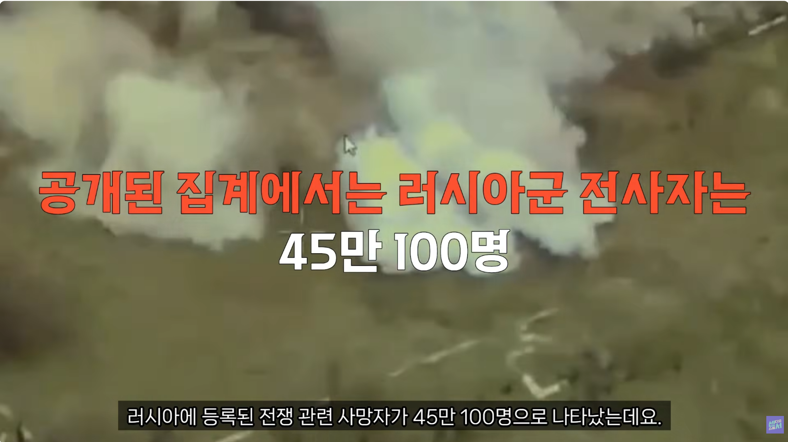
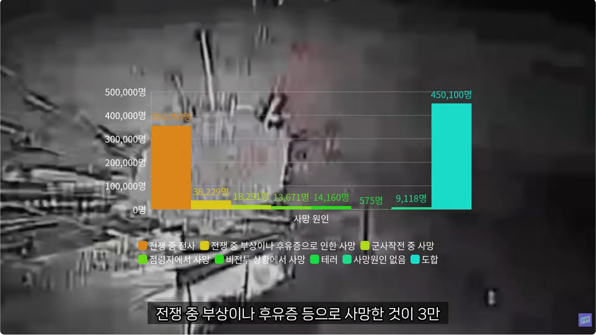

친 우크라계 해킹조직이 러시아 통계청을 해킹해 10TB에 달하는 자료를 수집함.

사망자 45만 100명.

전쟁 중 전사(아마 전투중 전사 뜻 하는 걸로 추정) : 35만 6천여명.
부상 및 후유증 사망 : 약 3만 8천여명
기타 군사작전, 테러 같은 사망자를 모두 합치면 사망자만 45만명.
참고로 소련-아프간 전쟁 당시 사망자가 1만 5천여명, 부상자가 5만 3천여명이었는데도 소련의 재정부담이 매우 컸다는걸 감안하면
러시아의 상태는 전쟁 직후 디폴트 선언해도 이상하지 않을 정도임.
미국 csis이 러시아군 사망자를 40-50만으로 잡고 부상자가 100만 잡았던데 맞았네
청년인구 사상자가 150만이면 시이이이이발
심지어 징집 피해 도망친 청년 인구수는 100만이라네 -(똑똑한놈들이 주로 도망감)
즉 러시아 청년층 250만이 증발함